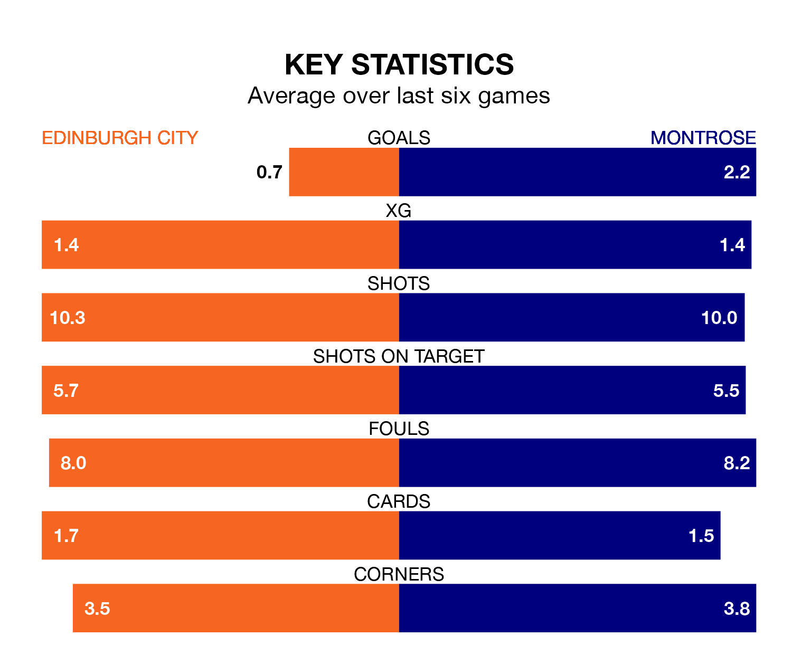

Montrose are strong favourites to take all three points despite Edinburgh City's home advantage in Saturday's match at the Meadowbank Stadium.
*Betting Company* are offering odds of 1.12 on Montrose sealing the win, with the visitors sitting fifth in League One table.
Edinburgh, who are 10th in the league and 35 points behind the Gable Endies, are priced at 15 to win. A draw is set at 8.4.
Edinburgh are in awful form in League One, with no wins and six losses from their last six games.
With three wins and a draw over that period, Montrose's form is much better – they have taken 10 points from 18, compared to City's zero.
With 34 goals in 31 games so far this season, the hosts are the league's joint-second-lowest scorers with 1.1 goals per game. And they are conceding more than average, letting in 88 goals at a rate of 2.8 per game.
The Gable Endies, meanwhile, are above average scorers, with 1.7 goals per game, compared to a league average of 1.6. They have also conceded 1.7 goals per game.
In the last 10 years, Edinburgh and Montrose have played each other on 16 occasions. Edinburgh won two of them, Montrose 10, and they drew four times.
On average, Edinburgh scored 0.9 goals and the Gable Endies 2.3 in those matches.
Their last meeting was on February 10, when Montrose won 3-0 at home.
In Kane Hester, the away team have one of the league's most on-form strikers so far this season. He has notched 10 goals in 30 appearances, to sit fifth in the scoring charts.
His goal rate of one every 218 minutes is slightly quicker than that of Robert Mahon, Edinburgh's top scorer with a goal every 137 minutes, and a total of seven goals in 16 games.
Edinburgh's last match was on Saturday, a 3-1 loss against Kelty Hearts, with Oliver McDonald getting the goal for Edinburgh.
Montrose lost 7-1 against Falkirk last time out, also on Saturday, with Hester on the scoresheet.
Updated: 16:41 (UTC), 04/04/24